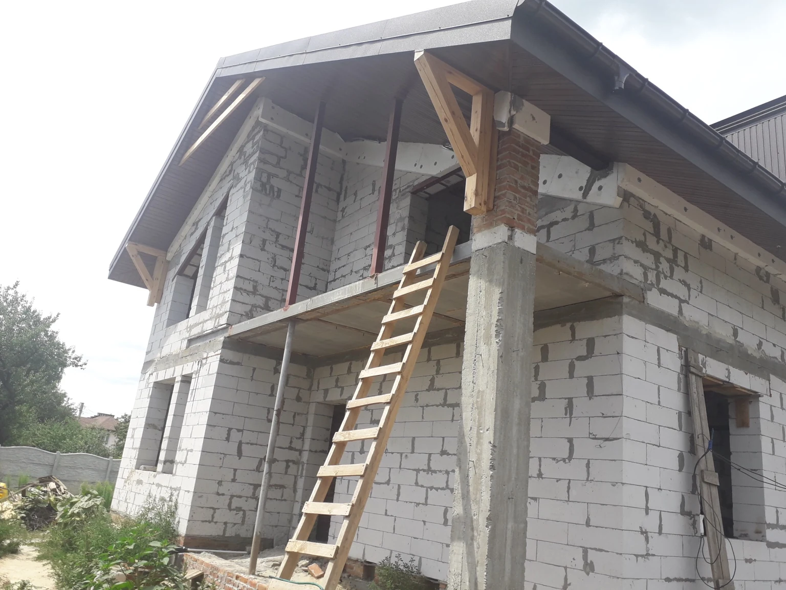

← Усі роботи
Приватний об’єкт
Монтаж бітумної черепиці на приватному будинку
Реальний приватний будинок на етапі будівництва. Виконана скатна покрівля з бітумної черепиці з оформленням карнизів і фронтонів.

Тип об’єктаПриватний об’єкт
Матеріалбітумна черепиця
Локація
METROPLEX
Що виконано на об’єкті
Реальний приватний будинок на етапі будівництва. Виконана скатна покрівля з бітумної черепиці з оформленням карнизів і фронтонів.
- підготовка суцільної основи
- монтаж бітумної черепиці
- оформлення карнизів
- оформлення фронтонів
Як читати цей кейс
Кейс показує реальний об’єкт і підтверджені етапи робіт. Технічне рішення для іншої будівлі може відрізнятися після перевірки основи, геометрії та вузлів.
- вихідна задача об’єкта
- застосована покрівельна система
- виконані етапи
- ключові примикання та периметр